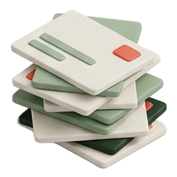
01 / AuditRaccogliere
Brand book, loghi, brochure, presentazioni, report e prodotti digitali vengono osservati come un unico patrimonio, non come file isolati.
Trasformo il patrimonio visivo di un'azienda in un sistema che il team e l'intelligenza artificiale usano ogni giorno: più contenuti, più in fretta, senza che il brand si sfilacci per strada.
Il patrimonio visivo di OpenEconomics era già coerente: brochure, presentazioni, report e prodotti digitali costruiti nel tempo, allineati fra loro. La sfida non riguardava l'ordine, ma la produzione: il team marketing doveva poter continuare a creare contenuti — presentazioni, PDF, pagine di sito, report — in autonomia e più in fretta, senza perdere la consistenza con tutto quello che c'era già.
Questa pagina mostra come quell'identità è diventata un'infrastruttura produttiva — e come lo stesso metodo può funzionare sul tuo brand. Gli output mostrati sono in produzione presso il cliente.
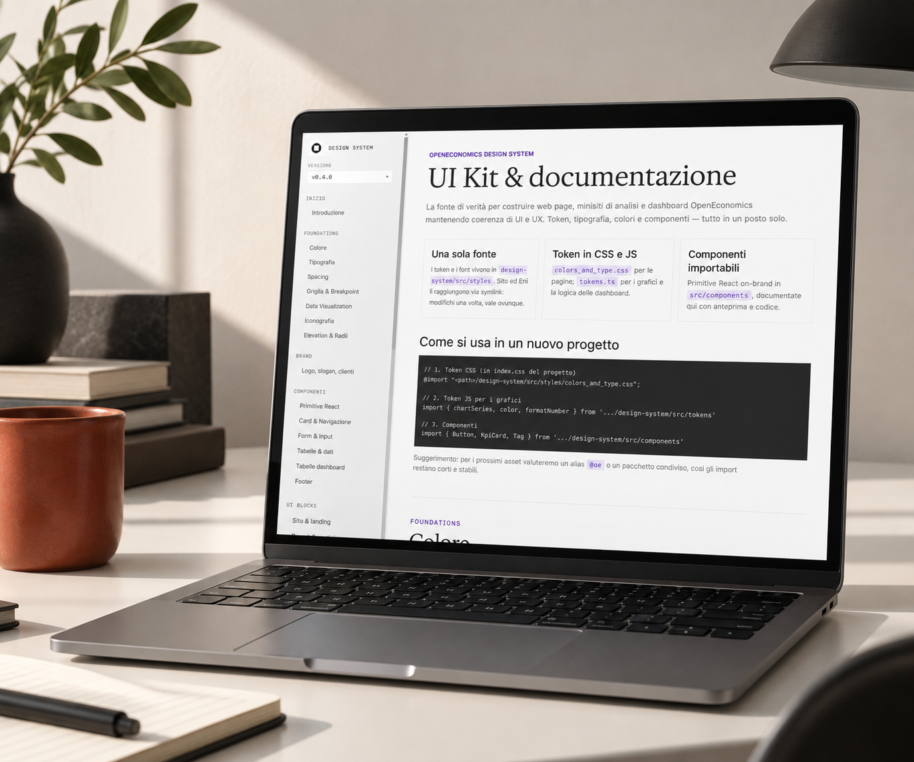

01 / AuditBrand book, loghi, brochure, presentazioni, report e prodotti digitali vengono osservati come un unico patrimonio, non come file isolati.
Gerarchie, ricorrenze, tono, composizione, tipografia e uso del dato diventano principi espliciti e verificabili.
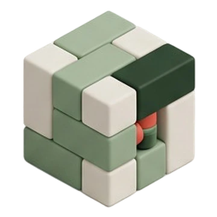
03 / SistemaToken, componenti, griglie, pattern, template e vincoli trasformano l’identità in uno strumento riutilizzabile.
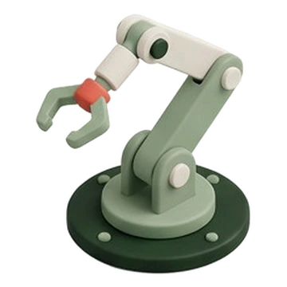
04 / AIIl sistema fornisce all’intelligenza artificiale il contesto necessario per generare nuovi output senza perdere coerenza.
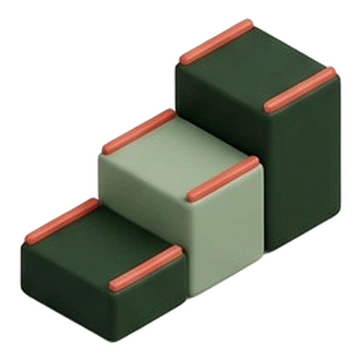
05 / FormazioneIl team impara a usare il sistema, a riconoscere quando un risultato non va bene e a far crescere la libreria. Senza questo passaggio il sistema resta uno strumento del fornitore invece che dell’azienda.
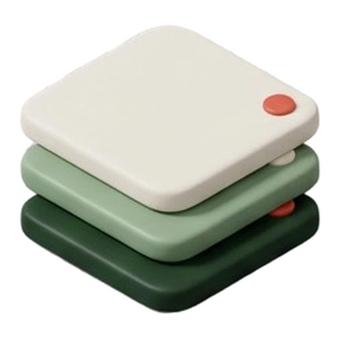
01Le decisioni fondamentali che definiscono il carattere visivo e il comportamento del sistema.
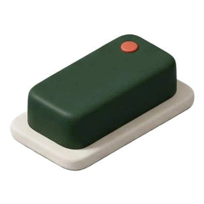
02Primitive riutilizzabili che traducono le regole in interfacce coerenti e accessibili.
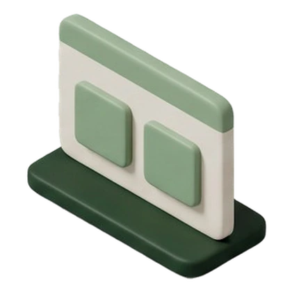
03Composizioni complete che accelerano la creazione di pagine e prodotti mantenendo la direzione del brand.
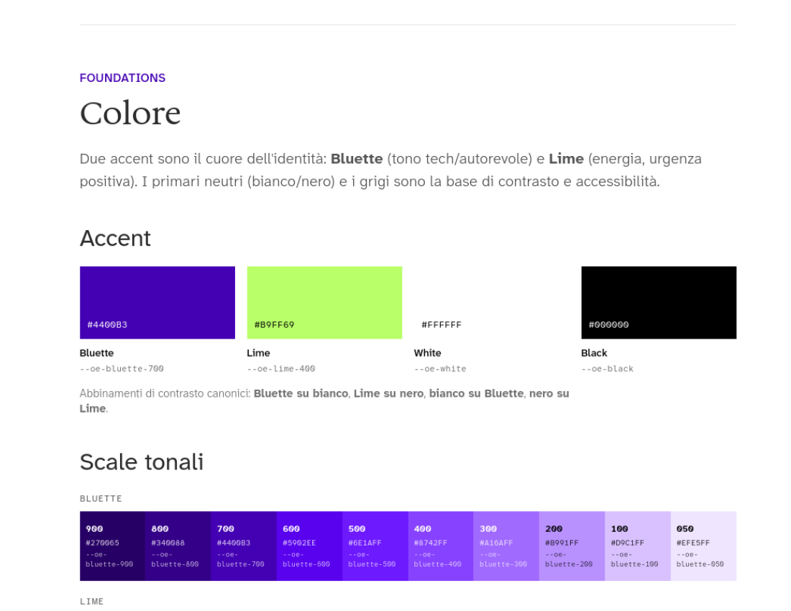
Le palette sono espresse come token e scale tonali; le famiglie tipografiche hanno ruoli distinti per titoli, long-form, tag e dati numerici.
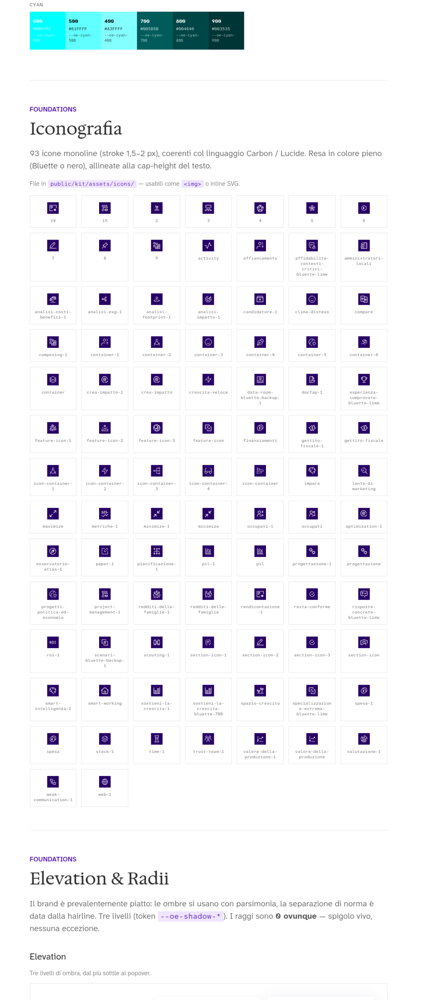
Una libreria monoline coerente, pronta per essere utilizzata come file o componente e mantenuta allineata alla tipografia.
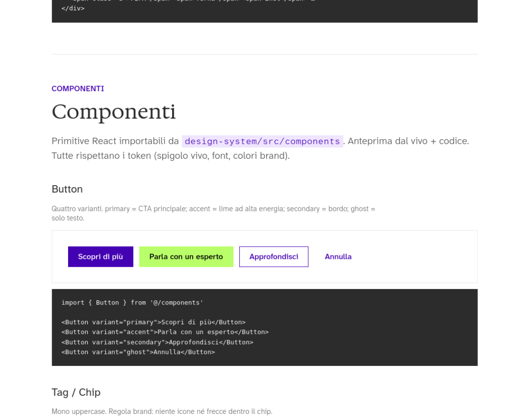
Ogni elemento combina anteprima, regola d’uso e implementazione, riducendo la distanza tra design e sviluppo.
Token CSS e JavaScript, font e componenti importabili permettono di modificare una regola una volta e propagarla nei prodotti collegati.
Il sistema documenta non solo l’aspetto, ma anche il comportamento: quando usare un componente, come comporlo e quali eccezioni evitare.
Tabelle numeriche, KPI, label, grafici e dashboard trattano il dato come materiale identitario, essenziale per un brand che lavora con analisi socioeconomiche.
La presenza di UI blocks per sito, report e applicazioni dimostra che il sistema non è astratto: è progettato per generare famiglie di output diverse.
Regole nominate, esempi corretti e pattern riutilizzabili diventano un contesto strutturato che l’intelligenza artificiale può comprendere e applicare.
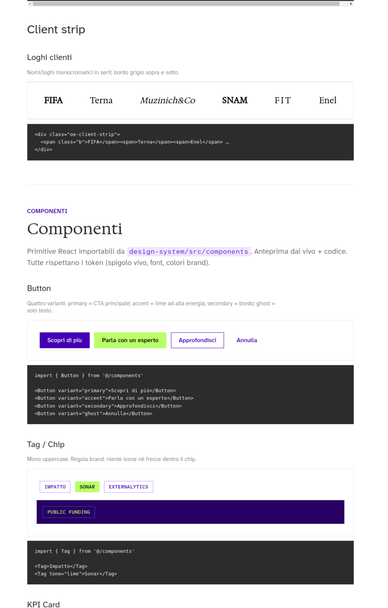
Varianti, stati e codice sono documentati insieme nella schermata reale del design system.
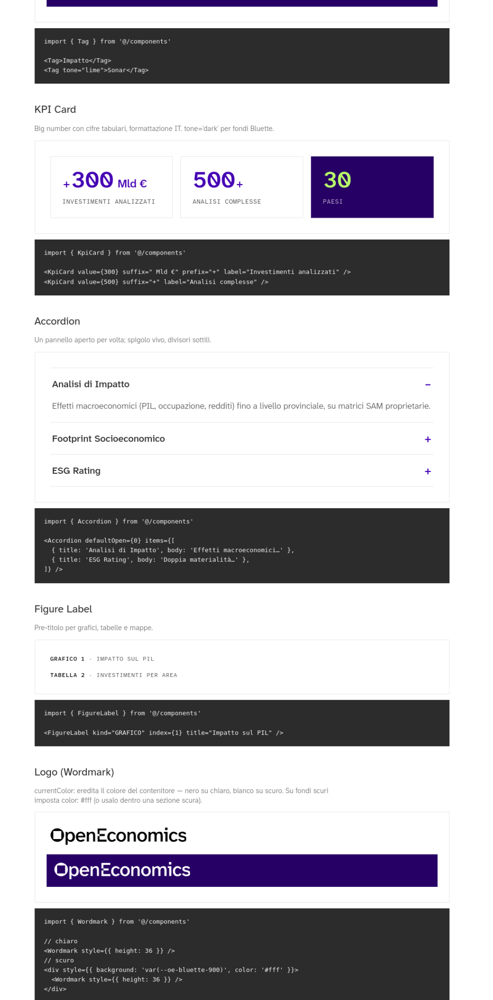
KPI, label e pattern interattivi traducono il linguaggio del dato in elementi riutilizzabili.
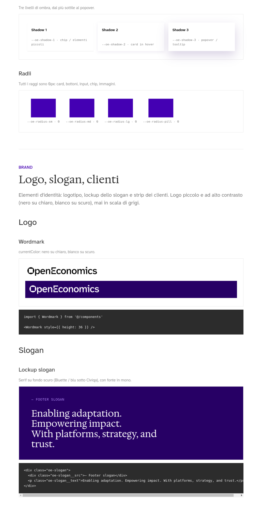
Logo, slogan e applicazioni editoriali mostrano come l’identità si compone oltre il singolo componente.
La libreria completa è presentata nel suo contesto reale, senza ricostruzioni illustrative.
Un modello che produce in fretta produce in fretta anche gli errori. Per questo non mi fermo alle regole: definisco come si giudica un risultato prima che arrivi al cliente. Il giudizio vive in file, non nella testa di chi era in stanza quel giorno.
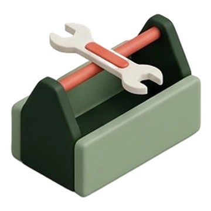
01 / ConformitàColori, spaziature, tipografia e componenti non sono suggerimenti: sono token e vincoli. Ciò che esce dal sistema si vede subito, e si corregge alla fonte invece che a valle.
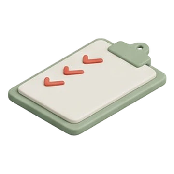
02 / QualitàGerarchia, leggibilità, equilibrio compositivo, trattamento del dato: ogni output viene valutato su criteri nominati, non su impressioni. Gli stessi criteri valgono per me, per il team e per l’AI.
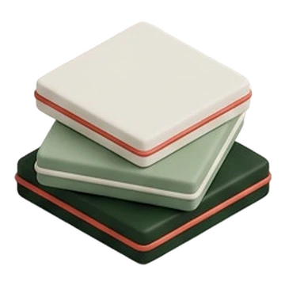
03 / GustoGli esempi approvati e quelli scartati vengono conservati insieme alla motivazione. È così che il sistema impara a distinguere ciò che è corretto da ciò che è buono.
È la differenza tra un’intelligenza artificiale che produce e una che sa quando fermarsi.
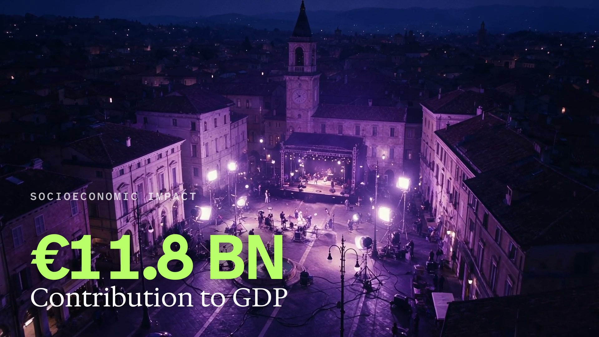
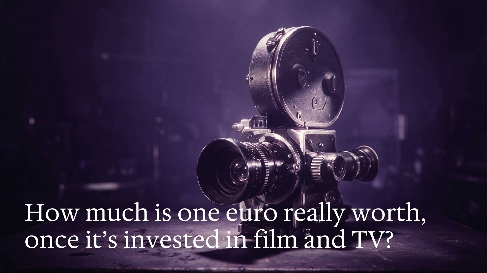
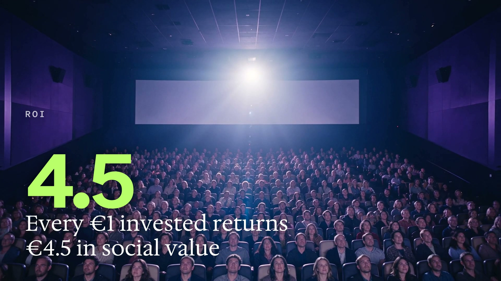
Immagini generate e animate, voce, musica, titoli in movimento e montaggio sono stati realizzati senza ricorrere a un software tradizionale di video editing.
Lo storyboard HTML ha reso visibili struttura, scene, testi e prompt, semplificando gli scambi con il cliente prima della produzione finale.
Trattamento delle immagini, font, colori, gerarchie e ritmo restano riconoscibili come OpenEconomics in ogni fotogramma.
Il design system diventa una regia operativa: accorcia la distanza tra idea, approvazione e output finale senza sacrificare qualità e continuità visiva.
Storyboard HTML condiviso con il cliente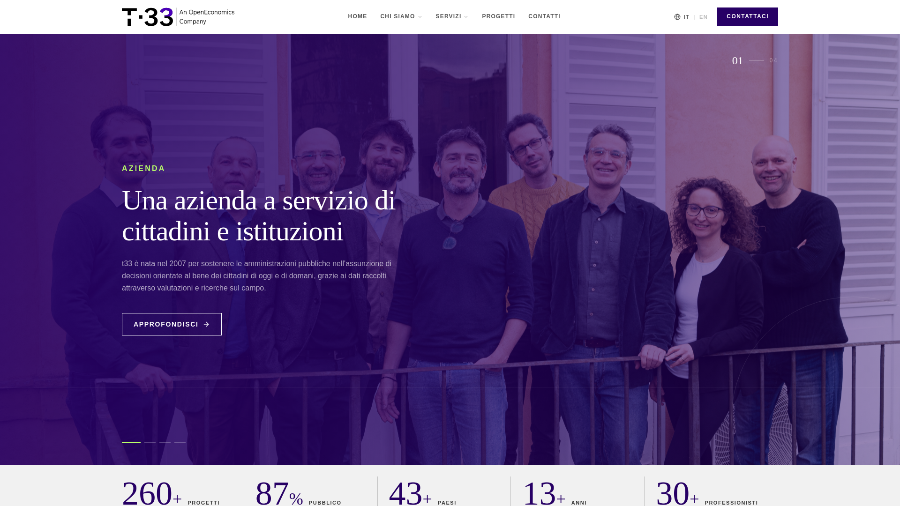
Un ecosistema web completo, coerente con la matrice visiva OpenEconomics e progettato per vivere nel tempo, non una singola landing page.
Sito in produzione, gestito dal clienteTipografia, colori, griglie, dati e componenti traducono il linguaggio del brand in un’esperienza digitale estesa.
Il cliente può inserire e aggiornare persone del team, articoli e progetti attraverso un back office dedicato.
Il sistema protegge la direzione visiva mentre l’organizzazione mantiene il controllo quotidiano dei propri contenuti.
Non consegno soltanto un’identità. Insegno all’intelligenza artificiale ad applicarla — e a riconoscere quando non funziona.
Ogni nuovo contenuto parte dalle stesse regole e dallo stesso patrimonio visivo. La regola non si chiede: si apre.
Un video completo — immagini, voce, musica, montaggio — nato dallo stesso sistema, con struttura e testi approvati prima della produzione.
Un sito intero che il cliente aggiorna dal proprio back office, senza passare da me per ogni contenuto. La direzione creativa resta protetta dal sistema.
Guardo tutto il materiale che hai già — brand book, presentazioni, sito, report, social — e ti dico che cosa è sistematizzabile, che cosa va rifatto e che cosa conviene lasciare com’è.
Costruisco la libreria da cui parte tutto: token, componenti, blocchi e le istruzioni che permette all’intelligenza artificiale di lavorare dentro il tuo brand invece che accanto.
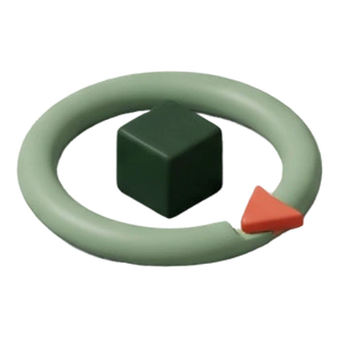
Passo 03 · ContinuitàUn sistema fermo invecchia. Ogni mese entrano nuovi blocchi e nuovi formati, l’archivio delle scelte si aggiorna e la produzione del team resta sotto controllo.
Questo caso parte da un’identità che esisteva già. Il sistema può però nascere anche insieme a un’identità nuova, quando questa è da creare o rinnovare: in quel caso gli strumenti arrivano con il linguaggio visivo, invece che anni dopo.
I tempi dipendono dall’ampiezza del materiale esistente e si definiscono dopo l’audit. Il lavoro creativo su misura — campagne, nuove identità, progetti unici — resta fuori dal canone e si quota a parte: il sistema serve a liberare tempo per quello, non a sostituirlo.
Un brand book descrive, un sistema esegue. Il PDF dice che il blu è quello: il sistema fa sì che il blu sbagliato non possa nemmeno essere usato, perché la regola vive nel codice che genera i materiali. Il brand book resta — diventa la fonte da cui parte il lavoro.
Non serve che lo sia. Chi produce contenuti lavora su una libreria consultabile e su un back office: sceglie un blocco, scrive, pubblica. Il codice sta sotto e riguarda me e chi sviluppa.
Sì, se lavora senza vincoli — ed è esattamente quello che succede quando la si usa senza sistema. Qui l’AI riceve regole nominate, esempi corretti, esempi scartati e criteri di valutazione: non inventa la direzione, la applica. E la direzione la decidiamo noi.
Il sistema è tuo. Token, componenti, documentazione e archivio restano nel tuo repository, in formati aperti e leggibili da chiunque. Nessun lock-in: il canone si rinnova perché serve, non perché sei bloccato.
Si parte da una chiamata di trenta minuti: guardo il materiale che hai già e ti dico che cosa è sistematizzabile — e che cosa, onestamente, non lo è. Se ha senso andare avanti, il primo passo è l’audit.
Scrivimi a info@alessiogranella.com · alessiogranella.com
Ho ricevuto il messaggio. Ti rispondo entro un giorno lavorativo, dallo stesso indirizzo: info@alessiogranella.com.
 02 / Lettura
02 / Lettura Passo 02 · Costruzione
Passo 02 · Costruzione